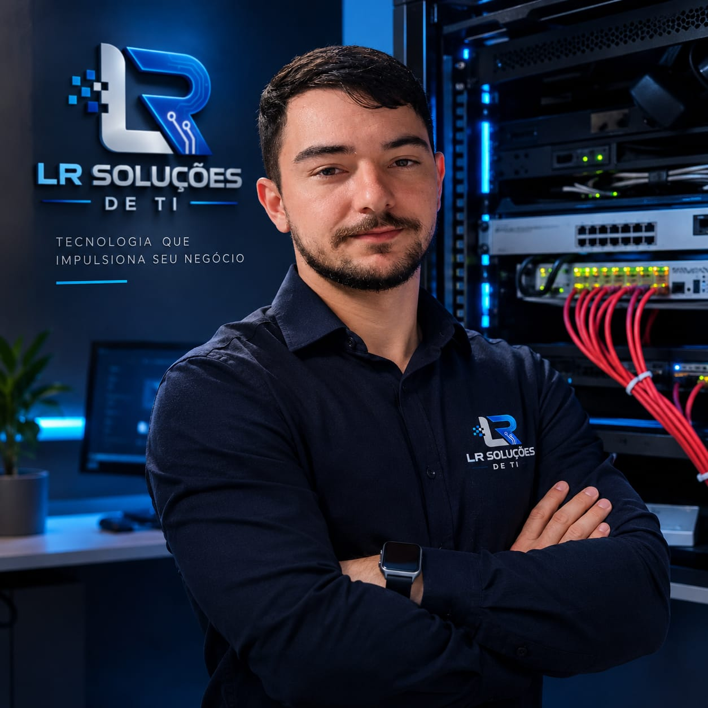

Suporte de TI
Apoio técnico para computadores, sistemas e infraestrutura de trabalho.
Acreditamos que a tecnologia deve facilitar o dia a dia, melhorar processos e ajudar empresas a trabalharem com mais organização, conectividade e eficiência.
A LR Soluções de TI atua com tecnologia, conectividade e infraestrutura, oferecendo suporte e soluções para empresas e negócios.
Nosso trabalho envolve desde o suporte técnico do dia a dia até projetos de redes, Wi-Fi, servidores, segurança e sistemas.
Buscamos compreender a realidade de cada cliente para propor soluções adequadas à sua estrutura e aos seus objetivos.
Tecnologia que impulsiona seu negócio.

A LR Soluções de TI é conduzida por Laurimar Rocha, profissional da área de tecnologia da informação, com atuação em suporte técnico, redes e infraestrutura.
A experiência prática com ambientes de TI e conectividade faz parte da forma como a LR encara cada projeto: entendendo o cenário, identificando necessidades e buscando soluções funcionais.
Mais do que resolver problemas pontuais, o objetivo é ajudar empresas a manterem sua tecnologia organizada, confiável e preparada para acompanhar suas atividades.
Atuamos em áreas essenciais para manter a estrutura tecnológica da sua empresa funcionando.
Apoio técnico para computadores, sistemas e infraestrutura de trabalho.
Projetos e configurações de redes cabeadas e redes sem fio.
Organização, configuração e suporte à infraestrutura tecnológica.
Desenvolvimento e soluções digitais para facilitar processos e rotinas.
Soluções de conectividade, câmeras e organização dos sistemas de monitoramento.
Soluções de internet e conectividade para ambientes empresariais e rurais.
Trabalhamos com uma abordagem prática, buscando clareza em cada etapa.
Conhecer a necessidade, o ambiente e os objetivos do cliente.
Analisar a estrutura existente e identificar oportunidades de melhoria.
Definir uma solução adequada à necessidade e à realidade do negócio.
Implementar, configurar e orientar para que a solução funcione corretamente.
Entender a necessidade do cliente e manter uma comunicação clara.
Buscar alternativas compatíveis com a realidade de cada negócio.
Trabalhar com organização, cuidado e atenção aos detalhes.
Conte para a LR Soluções de TI o que seu negócio precisa. Vamos conversar e encontrar um caminho.
Falar com a LR pelo WhatsApp